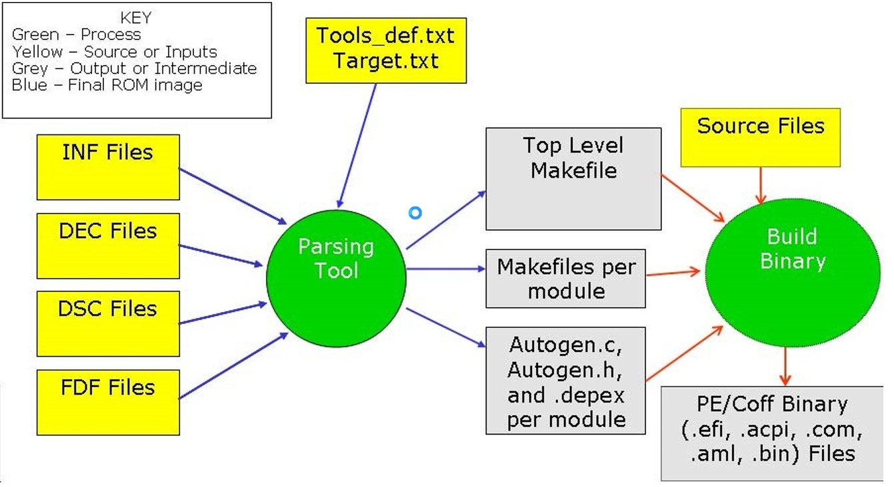

1.1 Overview
This chapter also clarifies new concepts introduced with EDK II.
Reference the EDK II User Manual, to understand how to obtain EDK II and how to build existing modules.
1.1.1 Module, Package and Platform
1.1.1.1 What is a Module?
A module is the smallest piece of separately compile-able code or pre-built binary. It contains a metadata file (INF) plus source code or binary. The INF file is required by the EDKII build system to describe a module's behavior, such as produced or consumed library classes, ppis, guids, protocols, pcds, and other information.
For example, in $WORKSPACE\MdeModulePkg\Universal\Bus\Pci\UhciDxe, the source files mentioned and the INF file compose a module.
,Refer to the EDK II Extended INF Specification. for the syntax of the INF file.
1.1.1.2 What is a Package?
A package is a group of zero or more modules. A package must contain a package metadata file (DEC), and possibly a platform metadata file (DSC).
Functionally, a package is a logical division of a project. Developers depend on reasonable judgment, such as license or specification compliance, to determine where to place a module. These metadata files and the module's INF files are used by the EDK II build system to automatically generate makefiles and a single module tip or whole flash tip, according to the build options used.
For information regarding the syntax of DSC and DEC files, please refer to EDK II DSC File Specification and EDK II DEC File Specification.
1.1.1.3 What is a Platform?
A platform is a special type of package with additional metadata files. A package must contain one DSC file and zero or one FDF file. The FDF is only required if flash output is required.
Refer to EDK II FDF File Specification for information regarding FDF files..
Refer to the EDK II Platform Port Guide for information about platform porting between EDK and EDK II.
1.1.2 Module Customization
Use the EDK II User Manual to understand the design purpose of the Library class/Library instance and PCD mechanisms. These mechanisms provide ways for developers to customize modules without changing the source code.
1.1.2.1 Library class/Library instance
Developers may choose a proper library instance according to its requirements, such as from performance, image size, or the limitation of module type.
In $WORKSPACE\MdePkg core package, there are many supported library classes and corresponding library instances. Browse the $WORKSPACE\MdePkg \include\library directory for basic information regarding the helper function API provided by these library classes.
1.1.2.2 PCD
Developers may take advantage of the PCD mechanism to extract information from outside a module, and control procedure behavior inside a module. The information may be known at compile time from the platform DSC or the package DEC files, but some files may arrive at flash image generation time, and some may be determined during execution.
Example:, in the following chapter, PcdDebugPropertyMask declared in
MdePkg.dec file in $WORKSPACE\MdePkg is used to control DebugLib behavior. This
PCD is FixedAtBuild type, meaning its value is determined at build time. The
EDK II build system converts this pcd to the value configured in DEC or DSC to
enable or disable the print ability.
1.1.3 EDK II Development Lifecycle
The lifecycle of EDK II development is divided into the five phases which follow.
1.1.3.1 Phase 1: Create a package
A package is the container of modules. A developer should first consider where
the module should be placed. As a general rule, modules newly developed by an
IHV/IBV should not be placed into existing EDK II core packages, which include
MdePkg,
4BThe Basics of EDK II
MdeModulePkg, IntelFrameworkPkg and IntelFrameworkModulePkg. One reason
is that these packages are published as a base-supported package to facilitate
module/platform development.
Note: These packages are open-source code and compliant with the BSD license. If the developed module is not intended to be open source, it should not be put into those core packages.
To create a new package, developers must create the DEC file to define the package's interfaces, including:
include directories for modules from other packages
the value of GUIDs
the value of Protocol GUIDs
the value of PPI GUIDs
the declaration of the PCD entries published by this package.
1.1.3.2 Phase 2: Create module metadata/Implement basic functionality.
After the module to be placed into a package is determined, developers must create an INF file to indicate the module's behavior, including:
module type
required library classes
required ppi/protocol/guid/PCD
dependency relationship with other modules.
Note: Dependency relationships may exist or not, depending on various module types.
Viewing a module's INF file provides a quick overview to an unfamiliar module.
After finishing the INF file, developers should start writing source code to implement basic functionality.
Note: In $WORKSPACE\MdePkg\Include\Library directory, there are many library classes to provide support functions. There are also entry point libraries for various module types. Developers should browse the header files for details.
1.1.3.3 Phase 3: Create DSC to build
In EDK II, the DSC file describes the build behavior of the package, including:
modules needed to be built
chosen library instances for various module type
the configuration of the PCD entries used by modules.
The single platform DSC and each referenced package's DEC files cooperate to define a package. These files and the module INF files are required to build all modules in the package.
1.1.3.4 Phase 4: Tune modules
To tune modules
use EDK II libraries for code reuse
use EDK II PCD mechanism for configuration.
The distinction between an EDK module and an EDK II module is that the EDK II module can be customized either statically or dynamically, as necessary.
Static customization is preferred to choose the library instance or determine the value of FeatureFlag/Fixed type of PCD at build time.
Dynamic customization is preferred for using Patchable/Dynamic type PCD to control procedure behavior on the fly.
EDK II module developers should consider what logic in the module could be generalized as early in the development of the module as possible. For example, if some functionality had been implemented in a library class of a core package, the developer should replace it by using the library class.
If a segment of logic can be extracted as common logic and shared by various modules, the developer can create a new library class and instance.
Note: In the EDK II module development, developers are strongly discouraged from using a conditional macro to control procedure behavior. The PCD mechanism provides a unified interface, and developers should use it to configure a module's behavior.
1.1.4 Build Infrastructure
The EDK II build system is based on Python and portable C code to provide crossplatform build-ability. Figure 1, developer illustrates the conceptual workflow of the EDK II build system infrastructure.
4BThe Basics of EDK II

Figure 1 Conceptual workflow
In brief, the EDK II build tool parses the metadata files (DSC, DECs, and INFs) to generate corresponding one top-level makefile and a separate set of makefile and autogen.c/autogen.h files for every module.
In the autogen files, the EDK II build tool generates all definitions of guids, protocols, ppis, and PCDs used by the module, and automatically invokes all of the constructors of used library instances in the module's entry point implementations.